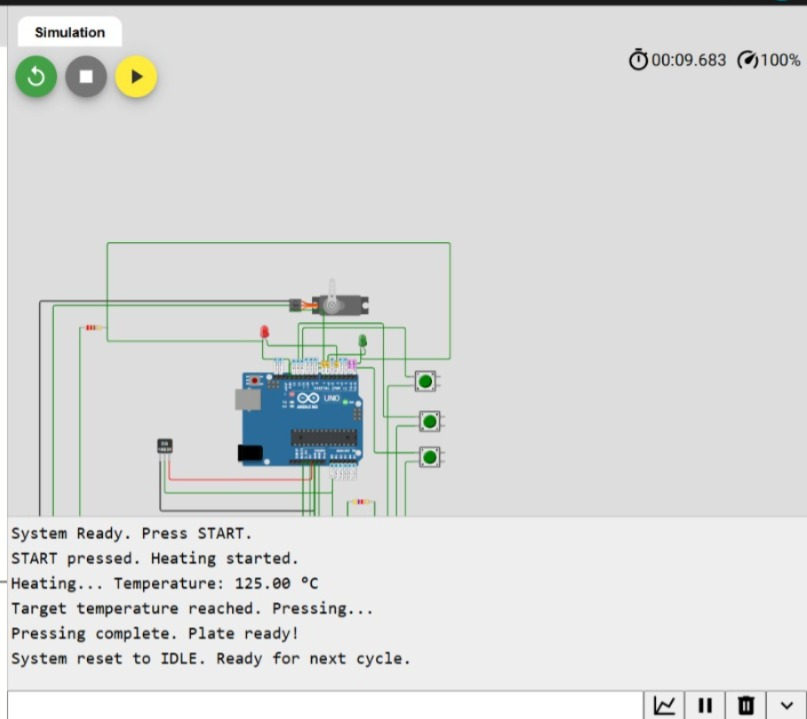

This project simulates the electronic brain of an industrial machine that turns agricultural waste (paddy husk) into biodegradable plates. It uses an Arduino, a temperature sensor, a servo motor (press), LEDs, and push buttons.

Simulation output: temperature reaches 120°C → press → plate ready
Click the button below to open the fully interactive simulation in your browser. No installation required.
▶ Launch Wokwi SimulationIf you want to inspect or modify the code and circuit diagram, you can download them here:
Note: These files are not required to run the simulation – the Wokwi link above already contains them.
The system is built as a classic FSM with four states: IDLE → HEATING → PRESSING → PLATE_READY. This is exactly how industrial controllers are designed.